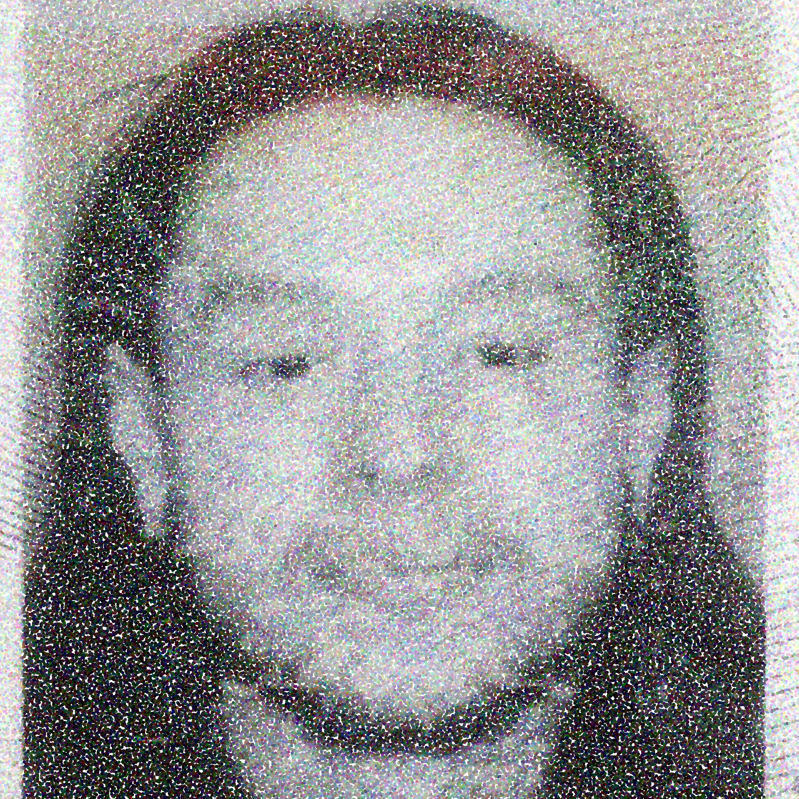

Nareedokmai (b. 1998) Is of Thai and Irish-American descent, resides in New York. Nareedokmai holds a career in agriculture and is a cross-disciplinary artist at Pratt Institute, emerging from photography into image making, interrogation, appropriation and ontological symbolism as medium.